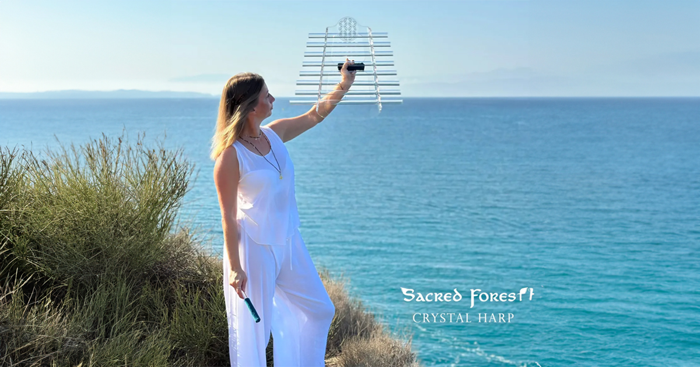

Harfy kryształowe · Sacred Forest
Znajdź swoje brzmienie.
Harfy kryształowe 432 Hz do muzyki, medytacji i sesji relaksacyjnych. Posłuchaj ośmiu modeli i wybierz instrument, którego brzmienie jest Ci najbliższe.
Aktualne ceny i zamówienia w oficjalnym sklepie sacredforest.store.

Posłuchaj różnicy
8 modeli. Wybór zaczyna się od słuchania.
To nagrania z oficjalnych kart produktów Sacred Forest. Włącz odsłuch przy spokojnej głośności, najlepiej na słuchawkach. Każdy przycisk „Cena i dostępność” prowadzi do konkretnego modelu w sklepie.


Twój pierwszy instrument lub kolejne brzmienie
Jak wybrać harfę dla siebie?
1. Porównaj nagrania
Nie wybieraj tylko po nazwie. Posłuchaj kilku modeli i wróć do tych, które najbardziej Ci odpowiadają.
2. Pomyśl, gdzie grasz
Do podróży sprawdź Lotus Travel. Jeśli chcesz poznać instrument z 15 dźwiękami, zobacz Planetary C. Wymiary i szczegóły porównaj w sklepie.
3. Sprawdź szczegóły
Przed zakupem sprawdź dostępne warianty, zawartość zestawu, cenę i dostawę na karcie wybranego modelu.
Przed zakupem
Pytania i odpowiedzi
Czym jest harfa kryształowa?
To instrument z rur kwarcowych o różnych wysokościach dźwięku. Możesz używać go do muzyki, medytacji i sesji relaksacyjnych.
Jak wybrać pierwszy model?
Zacznij od odsłuchu kilku nagrań przy podobnej głośności. Porównaj układ dźwięków, rozmiar i sposób używania instrumentu na kartach produktów. Jeśli planujesz podróże, sprawdź Lotus Travel; jeśli zależy Ci na 15 dźwiękach, zobacz Planetary C.
Co oznacza 432 Hz?
To odniesienie stroju muzycznego (A4 = 432 Hz), nie częstotliwość każdego dźwięku instrumentu. Wybieraj brzmienie według własnych preferencji. Nie przypisujemy temu strojowi działania leczniczego.
Gdzie znajdę cenę i dostępność?
Przycisk przy każdym modelu prowadzi do jego karty w sacredforest.store. Tam sprawdzisz aktualną cenę, warianty i dostępność oraz złożysz zamówienie.
Ile kosztuje dostawa i kiedy otrzymam harfę?
Dostępne opcje i koszty dostawy sprawdzisz w sklepie podczas składania zamówienia. Termin zależy od wybranego instrumentu i dostępności. Przed zakupem potwierdź termin na karcie produktu lub u Sacred Forest.
Czy nagrania zastępują odsłuch instrumentu na żywo?
Nagrania pochodzą z oficjalnych kart produktów Sacred Forest. Brzmienie zależy również od słuchawek, głośników i akustyki pomieszczenia. Odsłuch jest pomocą w porównaniu modeli.